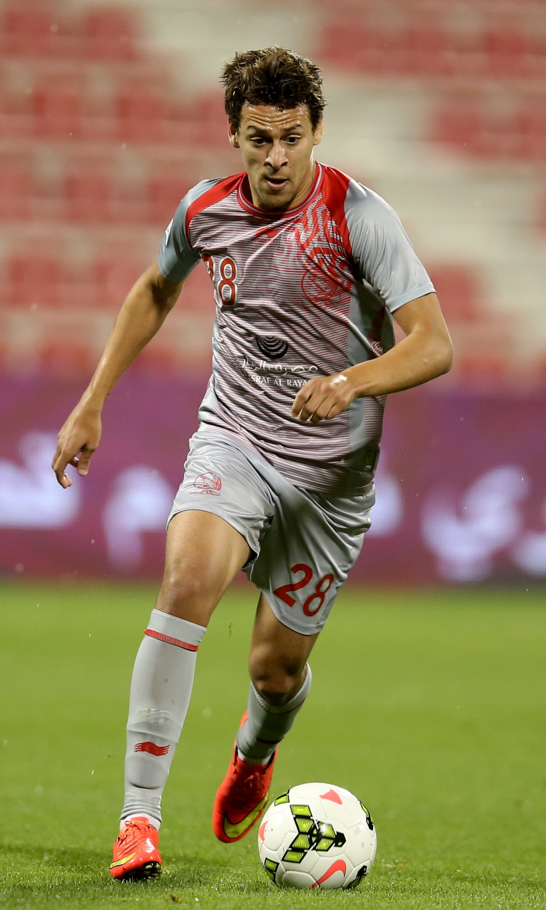

| Aymen Dahmen |
Portero |
27 |
Aymen Dahmen (Sfax, 28 de enero de 1997) es un portero tunecino que juega en el Al-Raed de Arabia Saudita. |
|
| Montassar Talbi |
Defensa central |
26 |
Montassar Talbi (París, Francia, 26 de mayo de 1998) es un defensor tunecino que juega en el Lorient de Francia. |
|
| Ellyes Skhiri |
Mediocampista |
30 |
Ellyes Skhiri (Lunel, Francia, 10 de mayo de 1995) es un mediocampista tunecino que juega en el Eintracht Frankfurt. |
|
| Hannibal Mejbri |
Mediocampista |
22 |
Hannibal Mejbri (Ivry-sur-Seine, Francia, 21 de enero de 2003) es un mediocampista tunecino que juega en el Manchester United. |
 |
| Youssef Msakni |
Extremo |
34 |
Youssef Msakni (Túnez, 28 de octubre de 1990) es un delantero tunecino que juega en el Al Arabi SC de Catar. |
 |
| Wahbi Khazri |
Delantero |
34 |
Wahbi Khazri (Ajaccio, Francia, 8 de febrero de 1991) es un delantero tunecino retirado de la selección, pero histórico jugador, ex Saint-Étienne y Montpellier. |
 |